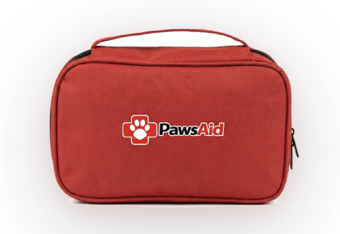

Systemswith feeling.
I build products, archives, assistants, games, and worlds where the technical system has a cultural point of view. The strongest work has proof: shipped software, real objects, playable prototypes, and writing that can survive scrutiny.


Flagship systems.
The portfolio leads with the work that can explain Jeffrey fastest: a real commerce brand, a public archive, an AI-mediated narrative, an open-source PWA, a Cantonese AI product, and a mobile game.
Playable atmospheres.
Character, motion, and browser worlds: work that should be read visually first, then opened when the prototype or motion piece matters.
Editorial and exhibitions.
Fashion copy, exhibition work, and publication contexts. These support the product story by showing taste, research discipline, and audience fluency.
Research with teeth.
The research section should not read like coursework. It should show how Jeffrey thinks: through objects, platforms, images, spectatorship, and the small rituals that reveal larger systems.

Jeffrey N. Tse is a Hong Kong-based builder working across product engineering, AI systems, cultural research, brand direction, and interactive narrative.
The work moves between practical and strange surfaces: pet first-aid logistics, toilet paper as material culture, smart-glasses rehearsal tools, Cantonese relationship language, game systems, and open-world experiments. The through-line is not medium. It is attention: how people behave when a system asks them to trust it.